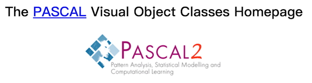
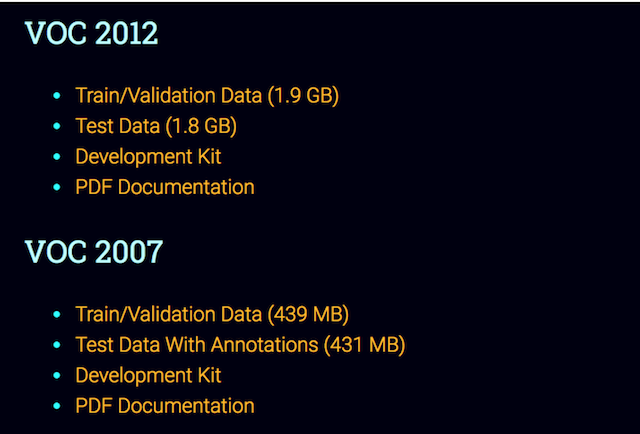
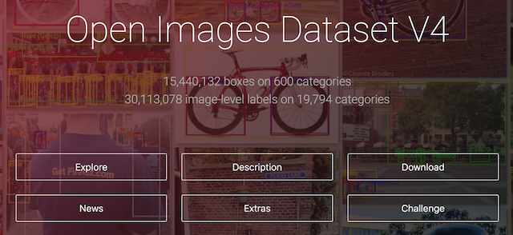
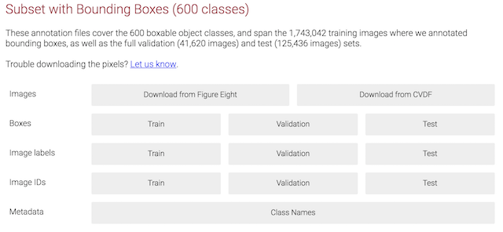
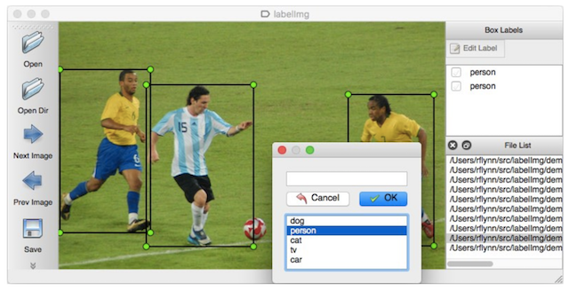

6.1 目标检测数据集
学习目标
目标
- 了解常用目标检测数据集
- 了解数据集构成
了解数据集标记的需求
知道labelimg的标记使用
应用
- 应用labelimg完成商品数据集的标记
6.1.1 常用目标检测数据集
- pascal Visual Object Classes

VOC数据集是目标检测经常用的一个数据集,从05年到12年都会举办比赛（比赛有task： Classification、Detection、Segmentation、PersonLayout）,主要由VOC2007和VOC2012两个数据集

注：
官网地址：http://host.robots.ox.ac.uk/pascal/VOC/
下载地址：https://pjreddie.com/projects/pascal-voc-dataset-mirror/
- Open Images Dataset V4

2018年发布了包含在 190 万张图片上针对 600 个类别的 1540 万个边框盒，这也是现有最大的具有对象位置注释的数据集。这些边框盒大部分都是由专业注释人员手动绘制的，确保了它们的准确性和一致性。

谷歌的数据集类目较多涵盖范围广，但是文件过多，处理起来比较麻烦，所以选择目前使用较多并且已经成熟的pascavoc数据集
6.1.2 pascal voc数据集介绍
通常使用较多的为VOC2007数据集，总共9963张图片，需要判定的总物体类别数量为20个对象类别是：
- 人：人
- 动物：鸟，猫，牛，狗，马，羊
- 车辆：飞机，自行车，船，公共汽车，汽车，摩托车，火车
- 室内：瓶子，椅子，餐桌，盆栽，沙发，电视/显示器
- 文件结构

- 文件内容
- Annotations: 图像中的目标标注信息xml格式
- JPEGImages:所有图片（VOC2007中总共有9963张，训练有5011张，测试有4952张）

6.1.3 XML
以下是一个标准的物体检测标记结果格式，这就是用于训练的物体标记结果。其中有几个重点内容是后续在处理图像标记结果需要关注的。
- size:
- 图片尺寸大小，宽、高、通道数
- object:
- name:被标记物体的名称
- bndbox:标记物体的框大小
如下例子：为000001.jpg这张图片，其中有两个物体被标记

<annotation>
<folder>VOC2007</folder>
<filename>000001.jpg</filename># 文件名
<source># 文件来源
<database>The VOC2007 Database</database>
<annotation>PASCAL VOC2007</annotation>
<image>flickr</image>
<flickrid>341012865</flickrid>
</source>
<owner>
<flickrid>Fried Camels</flickrid>
<name>Jinky the Fruit Bat</name>
</owner>
<size># 文件尺寸，包括宽、高、通道数
<width>353</width>
<height>500</height>
<depth>3</depth>
</size>
<segmented>0</segmented># 是否用于目标分割
<object># 真实标记的物体
<name>dog</name># 目标类别名称
<pose>Left</pose>
<truncated>1</truncated># 是否截断，这个目标因为各种原因没有被框完整（被截断了），比如说一辆车有一部分在画外面
<difficult>0</difficult># 表明这个待检测目标很难识别，有可能是虽然视觉上很清楚，但是没有上下文的话还是很难确认它属于哪个分类，标为difficult的目标在测试评估中一般会被忽略
<bndbox># bounding-box
<xmin>48</xmin>
<ymin>240</ymin>
<xmax>195</xmax>
<ymax>371</ymax>
</bndbox>
</object>
<object># 真实标记的第二个物体
<name>person</name>
<pose>Left</pose>
<truncated>1</truncated>
<difficult>0</difficult>
<bndbox>
<xmin>8</xmin>
<ymin>12</ymin>
<xmax>352</xmax>
<ymax>498</ymax>
</bndbox>
</object>
</annotation>
为什么要进行数据集标记呢？
1、提供给训练的数据样本，图片和目标真是实结果
2、特定的场景都会缺少标记图片
6.1.4 数据集标记工具介绍
6.1.4.1 介绍
LabelImg是一个图形图像注释工具。它是用Python编写的，并使用Qt作为其图形界面。注释以PASCAL VOC格式保存为XML文件，这是ImageNet使用的格式。

6.1.4.2 安装
官网给出了不同平台的安装教程，由于教程过于粗略。安装细节参考安装教程本地文件

- 参考本地文件：

6.1.5 商品数据集标记
在这里我们只是体验标记的过程，那么对于标记这个费时费力的工作，一般会有专门的数据标记团队去做，也称之为打标签，标记师。特别是缺乏具体应用场景的训练数据的时候。
6.1.5.1 需求介绍
首先在确定标记之前的需求，本项目以商品数据为例，需要明确的有
- 1、商品图片
- 2、需要被标记物体有哪些
我们确定了8种类别的商品（如需更细致，可将类别商品扩大），如下图

6.1.5.2 标记
使用lableimg进行商品数据集标记
- 运行labelimg
python labelImg.py

打开如下结果

- 对图片中的物体进行标记
标记原则为图片中所出现的物体与我们确定的8个类别物体相匹配即可

- 按下ctrl+s键保存，软件将会保存为默认XML文件格式(XML文件名与图片文件名保持一致方便后续处理)

其中关于(xmin,ymin,xmax,ymax)我们已经解释过，可通过软件标记的时候观察是否一致
6.1.6 总结
- 掌握labelimg的标注使用